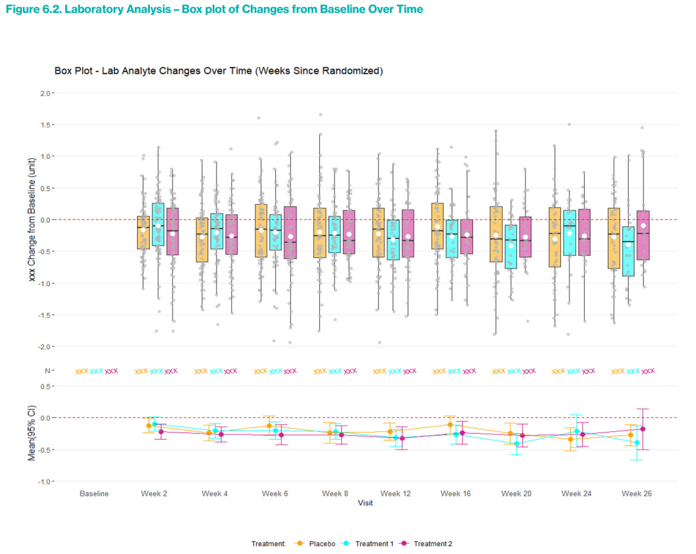
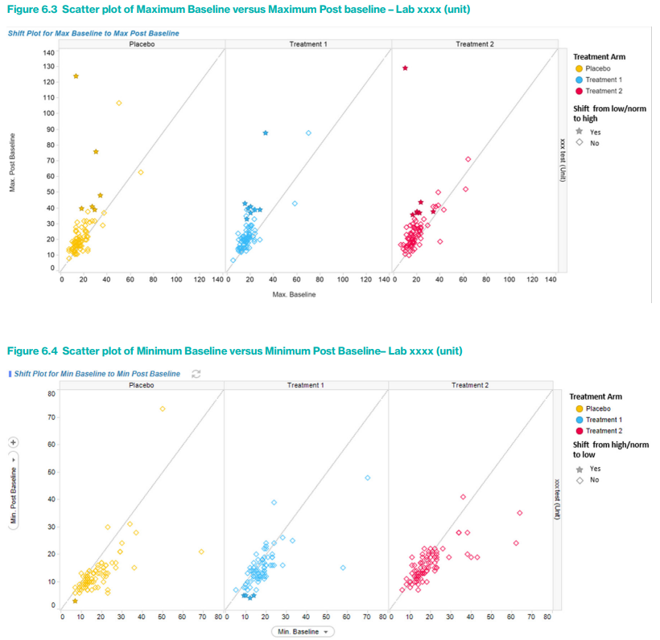

Safety Signal Detection and Evaluation
1 Safety Signal Detection
1.1 Introduction
Safety Signal Detection (SSD) is a critical component of pharmacovigilance and drug safety monitoring. Its primary aim is to detect, assess, and manage potential safety risks associated with pharmaceutical products, ensuring patient safety and supporting public health.
What is Safety Signal Detection?
SSD involves the routine evaluation of safety signals through periodic reviews of aggregated data from various sources, including clinical trials, post-marketing surveillance, and real-world data. A safety signal refers to evidence of a potentially new adverse event or a new aspect of a known adverse event that is caused by a medicinal product and that warrants further investigation.
SSD Process
- Strategy and Scope Setting:
- At the early phases of drug development, the clinical team, along with the benefit-risk lead (subject to confirmation), discusses and determines the SSD strategy. This includes deciding the frequency of reviews and the scope of included studies.
- The strategy is tailored to ensure that all potential safety issues are promptly identified and addressed. This involves periodic assessments that could be aligned with other regulatory requirements like Periodic Safety Update Reports (PSURs) or Development Safety Update Reports (DSURs).
- Data Collection and Aggregation:
- Relevant data from clinical trials and other sources are collected and aggregated.
- Analysis and Review:
- The data undergoes statistical analysis to identify trends or patterns that could indicate potential safety issues.
- Signal Evaluation:
- Identified signals are then evaluated to confirm their validity and potential impact on patient safety. This evaluation includes a detailed investigation into whether the signal represents a true risk or is due to other factors like underlying diseases or concurrent medications.
- Risk Management and Mitigation:
- If a safety signal is confirmed, risk management strategies are developed and implemented. These may include changes to the product labeling, restrictions on use, or in some cases, drug withdrawal.
- Documentation and Reporting:
- All findings and actions are thoroughly documented and reported to regulatory authorities as required.
1.2 Biostatistics and Data Science (BDS) Role
- BDS is primarily responsible for authoring the Program Statistical Analysis Plan (PSAP).
- BDS provides clinical study data summaries, typically in the form of Tables, Figures, and Listings (TFLs), which are essential for supporting the detection of safety signals.
- Additionally, BDS ensures that the clinical teams have access to advanced visualization tools for data exploration. These tools help in the intuitive understanding of complex datasets and trends, facilitating a more robust safety signal detection process.
2 Planning for IND Safety Reporting
2.1 Safety Reports (SER & SSAR)
Safety Evaluation Report: A flexible approach for reviewing safety topics which are not triggered from the signal detection process. An SER can be upgraded to an SSAR if the safety topic becomes a valid signal during the process. This report is led by the Safety Writer
Safety Signal Assessment Report: Further evaluated signal considering all available evidence, to determine whether there are ne wrisk causually assoiciated with active substance or medicinal product, or if known risk have changed. his report is led by the Safety Writer
2.2 Expected and Anticipated Serious Adverse Events (SAEs)
Expected SAEs refer to serious adverse events that can reasonably be predicted based on the known pharmacological properties, previous clinical trial outcomes, or typical characteristics of the drug class. These events are usually documented in the drug’s label or other professional literature. Therefore, when these events occur in new clinical trials, they are considered “expected” because their potential has already been identified and acknowledged based on existing data. Expected SAEs are important for risk management and informed consent processes, as they help set realistic expectations for both clinicians and participants regarding the known risks associated with a drug.
Anticipated SAEs, while similar to expected SAEs, generally refer to events whose occurrence is foreseen based on less definitive evidence than that for expected SAEs. These could be based on preliminary data, such as early clinical trials, animal studies, or even theoretical considerations linked to the drug’s mechanism of action. Anticipated SAEs are not as firmly established as expected SAEs but are considered likely enough that they should be monitored for in the context of ongoing clinical research. They may or may not be included in the product label but are anticipated from a safety surveillance perspective.
Key Differences
- Basis of Prediction: Expected SAEs are based on more solid, often clinically verified evidence, while anticipated SAEs may rely on preliminary or less conclusive evidence.
- Documentation: Expected SAEs are typically documented in official product materials like labeling, whereas anticipated SAEs might not be, depending on their level of evidence and regulatory requirements.
- Regulatory Impact: Expected SAEs have a direct impact on the drug’s labeling and are crucial for regulatory compliance and patient safety communications. Anticipated SAEs, while also important, might influence ongoing monitoring strategies and potential label updates as more data become available.
2.3 Aggregate Analysis Planning
Planning for FDA IND (Investigational New Drug) safety reporting is a critical component of clinical trial management, ensuring that serious adverse events (SAEs) are properly identified, analyzed, and reported. This process is especially vital during the transition from Phase 1 to Phase 2 of clinical trials, where a clear understanding of the safety profile of the investigational medicinal product (IMP) is essential for further development.
Aggregate Analysis Planning: Early in the product development lifecycle, planning for the aggregate analysis of aSAEs and expected SARs should commence. This is crucial as it sets the foundation for ongoing safety monitoring and regulatory compliance. The planning should start as the studies transition from Phase 1 to Phase 2, which is typically when the target population for these studies has been clearly identified and the safety data from initial human exposure is available.
Possible Approaches for Aggregate Analysis:
- Analysis of All Serious Adverse Events (SAEs) by Treatment
Group:
- This approach involves periodic reviews of all SAEs sorted by treatment groups within the clinical trial. The primary focus is to identify whether aSAEs or expected SARs are occurring at a significantly higher incidence in the group receiving the IMP compared to a concurrent control (either placebo or an active comparator) or a historical control group. This method helps in understanding the direct impact of the drug under study relative to other treatments or known data.
- Unblinding Trigger Approach:
- In this method, a blinded quantitative analysis is conducted. The Unblinding Trigger Approach focuses on the analysis of anticipated serious adverse events (aSAEs) and expected serious adverse reactions (SARs). This approach uses a pre-specified threshold to determine whether the overall blinded incidence rate of these events is higher than either the estimated background incidence rate in the target population or the incidence of expected SARs as listed in the Reference Safety Information (RSI).
- If these thresholds are exceeded, the SSDT may conduct a further blinded review and, if necessary, escalate the safety issue to the Benefit Risk Team (BRT) for consideration. If the BRT deems it necessary, an unblinded review may be initiated.
Selection and Initiation of Aggregate Analysis:
The Safety Surveillance and Data Team (SSDT) is responsible for selecting the appropriate methodology for aggregate analysis. The choice between analyzing all events by treatment group or applying the unblinding trigger approach depends on several factors including the study population, the characteristics of the product, and the size and duration of the clinical studies involved. Aggregate analysis is typically initiated during Phase 2 of clinical studies, assuming there are enough participants and observed SAEs to conduct a meaningful analysis.
Documentation in Safety Surveillance Plan (SSP): The specific methodologies chosen for the aggregate analysis are detailed in the product-specific FDA IND Safety Surveillance Plan (SSP), which is a dedicated section of the Safety Signal Detection Strategy. The SSP is crafted and reviewed by the SSDT and should include:
- The chosen methodology (Analysis of All Events by Treatment Group and/or Unblinding Trigger Approach).
- Criteria for further assessment if using the Unblinding Trigger Approach, including thresholds that might trigger an IND safety report.
- A list of aSAEs with MedDRA search criteria used for identifying these events in the clinical database.
- Estimations of background incidence rates for aSAEs, if possible.
- Protocols for when unblinding is necessary to evaluate potential causal relationships with the IMP.
Defining anticipated serious adverse events (aSAEs)
- The process begins when the Development Physician initiates the definition of aSAEs as soon as the target patient population(s) have been identified and the first study concepts in these populations have been approved. This early initiation ensures that the safety monitoring is tailored to the specific needs of the population from the outset.
- The Development Physician is responsible for defining the characteristics of the target population and checking for any existing lists of aSAEs relevant to this group.
- They lead efforts to update or create new lists of aSAEs, involving contributions from other functions such as Medical Affairs to identify relevant clinical studies for evaluating aSAEs and background incidence rates.
- The RWE Representative uses Real World Data, starting with a focused literature review, and if necessary, conducting studies using fit-for-use Real World Databases to identify potential aSAEs.
- If the initial literature review does not yield sufficient data, further studies are conducted to estimate background incidence rates for each aSAE. This step is critical for understanding the typical occurrence rates of these events outside of clinical trials.
- Since Real World Evidence might use non-MedDRA terms, the list of aSAEs identified needs to be reviewed by the Medical Coding Oversight Lead to define these events in standardized MedDRA terms.
- The Development Physician consolidates a preliminary list of aSAEs using MedDRA search terms based on the RWE and statistical analyses.
- The Statistical Representative then estimates the background incidence rates for each aSAE using historical clinical data.
2.4 XSUR - Standard Required Safety Reporting Documents
DSUR/PSUR/IB/J-NUPR/RMP
These documents are regulatory safety reporting requirements that help ensure the ongoing evaluation of the safety profile of investigational and marketed drugs.
1. DSUR (Development Safety Update Report)
Purpose:
The DSUR is a yearly regulatory document that provides a comprehensive safety overview of an investigational product during its development phase (pre-marketing).General Content:
- Summary of cumulative safety data across all clinical trials
- Adverse event (AE) overview
- Exposure data
- Ongoing and completed study updates
- Benefit-risk considerations
Timing:
Annually, typically synchronized with the Investigational Brochure (IB) update.BST Contribution:
- TFLs summarizing:
- Cumulative subject exposure, often broken down by population (e.g., healthy vs. patient, age groups)
- Study-specific exposure summaries
- Participant withdrawals due to adverse events
- SAE/AE listings if required
- TFLs summarizing:
2. PSUR (Periodic Safety Update Report)
Purpose:
The PSUR is used to monitor the safety of marketed (authorized) products over time, usually post-approval.General Content:
- Cumulative safety information since the product was authorized
- Global safety data
- Benefit-risk evaluation
- Regulatory actions taken
- Literature and spontaneous report summaries
Timing:
Varies depending on the product’s time on the market and specific regulatory agreements (e.g., every 6 months, 1 year, or 3 years).BST Contribution:
- TFLs supporting:
- Cumulative subject exposure, including dose and duration
- Trend summaries (e.g., AE over time)
- Stratified summaries by indication or region, if required
- TFLs supporting:
3. IB (Investigator’s Brochure)
Purpose:
The IB is a reference document for investigators conducting clinical trials and contains comprehensive data on the investigational product, including safety and efficacy findings.General Content:
- Clinical and non-clinical safety data
- Pharmacokinetics and pharmacodynamics
- Investigator guidance
- Benefit-risk summary
Timing:
Updated annually, often in parallel with DSUR preparation.BST Contribution:
- TFLs used in the Adverse Drug Reaction (ADR)
section:
- Listings or summary tables of AEs considered related
- Cumulative AE rates
- Narrative support via structured data
- TFLs used in the Adverse Drug Reaction (ADR)
section:
4. J-NUPR (Japanese Non-serious Unlisted Periodic Report)
Purpose:
A Japan-specific post-marketing requirement for periodic reporting of non-serious and unlisted adverse events observed during post-marketing surveillance.General Content:
- Line listings of applicable non-serious, unlisted AEs
- Summary counts stratified by term, SOC, region, etc.
Timing:
Regular intervals defined by the Japanese Ministry of Health, Labour and Welfare (MHLW)BTS Contribution:
- Delivery of:
- Cumulative frequency tables
- Listings of unlisted events
- Patient-level datasets, filtered by local criteria
- Delivery of:
5. RMP (Risk Management Plan)
Purpose:
The RMP outlines how the risks of a medicinal product will be identified, characterized, prevented, or minimized once the product is on the market.General Content:
- Product safety specification
- Pharmacovigilance plans
- Risk minimization measures (e.g., targeted education, monitoring)
Timing:
- At the time of marketing authorization application (MAA)
- Updated as needed post-authorization (e.g., after new safety signals)
BST Contribution:
- Statistical review and validation of:
- Exposure estimates
- Incidence rates of identified and potential risks
- Monitoring metrics (e.g., patient compliance, reporting rates)
- Statistical review and validation of:
Reference:
EMA guidance:- GVP Module V – Risk Management Systems (Rev 2)
- RMP Q&A on EMA website
- GVP Module V – Risk Management Systems (Rev 2)
3 BSSD
4 Adverse Event
Historical context:
Historically, safety has received less methodological attention compared to efficacy. As a result, development of advanced statistical techniques for safety evaluation is still evolving, but catching up. Efficacy analyses have long relied on sophisticated inferential models, whereas safety often remains descriptive—this is changing.Descriptive statistics are central:
Safety analyses are typically descriptive, meant to support medical interpretation rather than to test formal hypotheses. This aligns with how safety data are often exploratory in nature, looking for signals rather than proving effects.Assumptions matter:
Like all statistical approaches, safety analyses rely on assumptions (e.g., constant hazard, non-informative censoring, independence). Acknowledging and validating these assumptions is vital to ensuring results are meaningful and trustworthy.No one-size-fits-all approach:
While systematic methods are often used (like EAIRs or standard incidence tables), they may not capture all nuances. Therefore, flexibility to apply additional or alternative methods (like time-to-event or competing risks models) is encouraged, depending on the context.Apply broad statistical principles:
Sound practices such as assumption checking, use of normal approximations when valid, and even meta-analysis (especially in pooled studies or signal detection across trials) are equally important for safety data as they are for efficacy.
4.1 Safety Topics of Special Interest
Safety topics may emerge throughout the drug lifecycle from various sources:
| Source | Description |
| Toxicology and nonclinical data | Suggest potential human toxicities |
| Known class effects | Effects typical to a drug class |
| Literature | Reports of adverse effects |
| Post-marketing data | New or more frequent/severe adverse drug reactions discovered after approval |
| Phase I to IV clinical trials | Single events or imbalances in aggregate analyses indicating potential safety concerns |
| Regulatory requests | Specific demands for analysis or reporting |
| Safety reports review | Periodic Safety Update Reports (PSUR), Development Safety Update Reports (DSUR) |
Definitions of Important Terms
| Term | Definition |
| Adverse Event (AE) | > Any untoward medical occurrence associated with the use of a study drug in humans, whether or not considered study-drug-related. |
| Adverse Drug Reaction (ADR) | > An undesirable effect reasonably likely caused by a study drug, either as part of its pharmacological action or unpredictable in occurrence. |
| Percent (AE reporting context) | > Number of patients with an event divided by the number of patients at risk, multiplied by 100. Also called event rate, incidence rate, crude incidence rate, or cumulative incidence. |
| Exposure-Adjusted Event Rate (EAER) | > Number of events (all occurrences counted) divided by total time exposed. Also known as person-time absolute rate. Time units may be adjusted (e.g., events per 100 person-years). |
| Exposure-Adjusted Incidence Rate (EAIR) | > Number of patients with an event divided by total time at risk. For patients with events, time from first dose to first event; for others, total assessment interval time. Also called person-time incidence rate. |
| Safety Topics of Interest | > Broad term including AESIs, identified or potential risks needing characterization, potential toxicities (e.g., hepatic), drug class-related findings, or regulatory requests. |
| Study-Size Adjusted Percentage | > Weighted percentage from multiple controlled studies, calculated by weighting observed percentages within studies by relative study size in pooled population. Also called study-size-adjusted incidence percentage. |
| Treatment-Emergent Adverse Event (TEAE) | > An AE occurring after first administration of intervention that is new or worsened. Implementation varies across industry. |
General Recommendations for Safety Data Analyses and Displays
- Odds Ratios can take any value between \(-\infty\) and \(+\infty\) on the log scale, making them robust for detecting differences regardless of control event rates.
- Relative Risks can be misleading when control event rates are high because the maximum risk ratio is bounded.
- Confidence Intervals provide insight into the uncertainty of estimates but must be interpreted with caution, especially when wide.
- The choice of metric and statistical summaries should be guided by the goal of the analysis (public health impact vs. signal detection) and the audience.
Choice of Comparative Metric for Incidence Proportions/Percentages
- Purpose: Establish the risk profile of a drug by comparing adverse event (AE) data between patients receiving the investigational drug and a control group (placebo or active control).
- Metrics fall into two categories:
| Metric Type | Examples | Characteristics | Use Case/Comments |
| Absolute Scale | Risk difference | Directly reflects magnitude of affected patients; easier for rare events | Good for understanding public health impact |
| Relative Scale | Relative risk, Odds ratio, Hazard ratio | Useful as flagging mechanisms to identify events needing further investigation | Good for understanding relative impact |
Risk Difference:
- Reflects the absolute magnitude of patients affected.
- Easier to implement for low-frequency events.
- Less effective for identifying rare events needing further investigation.
Relative Risk:
- Easier to understand than odds ratio.
- Problematic when control event rates are high (e.g., if control rate = 50%, relative risk maxes at 2).
- Good for understanding relative impact.
- Not invariant to coding changes (event vs. no event).
Odds Ratio:
Has better mathematical properties, including:
- Log odds ratio ranges from \(-\infty\) to \(+\infty\) regardless of control event rate.
- Invariant to coding changes (reciprocal when switching event/no event).
More effective for signal detection regardless of background rate.
Less intuitive for lay audiences.
Useful as a flagging mechanism for further investigation.
Summary of Metric Usefulness:
| Metric | Understand Public Health Impact | Understand Relative Impact | Use for Signal Detection | Ease of Interpretation |
| Risk Difference | Excellent | Poor | Difficult | Easy |
| Relative Risk | Poor | Good | Difficult (with high background rate) | Easy |
| Odds Ratio | Moderate | Excellent | Excellent | Difficult |
Presentation Recommendations:
- For public presentation, absolute differences or risk ratios are preferred over odds ratios.
- Interactive displays should allow users to select among multiple metrics.
- For Adverse Events of Special Interest (AESIs), showing both absolute and relative metrics is often warranted.
P-values and Confidence Intervals in Safety Assessments
There is ongoing debate about the value of p-values and confidence intervals (CIs) in safety data.
According to the FDA Clinical Review Template and ICH E9 Section 6.4:
- P-values and CIs are descriptive, not inferential, unless trials are specifically powered for hypothesis testing.
- CIs can aid interpretation by showing uncertainty.
- P-values can serve as a flagging mechanism to highlight differences warranting further attention.
Recommendations on Use:
- Include some measure of uncertainty: confidence intervals, p-values, posterior credible intervals, or posterior probabilities.
- This white paper favors confidence intervals over p-values to provide a crude estimate of evidence strength.
- If p-values are used, report actual p-values rather than threshold indicators (e.g., asterisks), to emphasize interpretation over hypothesis testing.
- Avoid basing adverse drug reaction (ADR) conclusions solely on p-values or confidence intervals.
Potential Issues and Interpretation Challenges:
| Concern | Explanation |
| High p-values or CIs including 0 (or 1) | May cause unwarranted dismissal of potential signals |
| Misinterpretation of p-values | Could lead to unnecessary concern over too many outcomes |
| Wide confidence intervals | Often arise from low event frequencies; high upper bounds may cause undue alarm |
Educating interpreters of safety analyses on these nuances is critical.
Recommendation for Reporting Safety Data:
- Include within-arm descriptive statistics.
- Report measures of difference between arms (e.g., risk difference).
- Accompany differences with confidence intervals.
Decision-Making Frameworks for ADR Identification:
| Framework | Description |
| CIOMS Working Group | Flexible framework considering frequency, timing, preclinical findings, mechanism of action |
| Bradford Hill Criteria | Provides criteria for causality assessment based on multiple evidence sources |
- When only percentages are displayed (without p-values, CIs, or comparative metrics), it can be difficult to identify events for further scrutiny.
- Objective processes or team decisions are necessary to prioritize AE review.
4.2 MedDRA Hierarchical Structure and Adverse Events of Special Interest (AESI)
MedDRA Hierarchy Levels
| Level | Description |
| SOC (System Organ Class) | Highest level grouping (e.g., “Neoplasms”) |
| HLGT (High Level Group Terms) | Subgroups within SOC |
| HLT (High Level Terms) | Further subgroups within HLGT |
| PT (Preferred Terms) | Single medical concepts or events |
| LLT (Lowest Level Terms) | Synonyms or variations of PTs |
- Each PT is assigned one primary SOC, and may have additional secondary SOCs based on site of manifestation or other factors.
- Study databases usually populate only primary SOC/HLT for PTs unless otherwise specified.
- Analysts must specify if they want to include PTs with primary SOC/HLT only or also those with secondary SOC/HLT.
- When sponsors create Custom MedDRA Queries (CMQs), the list of PTs used should be provided in a dataset.
- Regulatory agencies should review PT lists to ensure appropriateness and facilitate analysis integration.
Examples of PT Assignments with Primary and Secondary SOCs
| PT Term | Primary SOC | Secondary SOC | Notes |
| Congenital absence of bile ducts | Congenital, familial and genetic disorders | Hepatobiliary disorders | Secondary SOC based on site of manifestation |
| Skin cancer | Neoplasms benign, malignant, unspecified | Skin and subcutaneous tissue disorders | Primary SOC assignment depends on site of manifestation for cysts and polyps |
| Enterocolitis infectious ducts | Infections and infestations | Gastrointestinal disorders |
4.3 Exposure-Adjusted Incidence Rates (EAIRs)
Applicability
In the context of clinical studies, specifically as a measure of the rate of occurrence of adverse events (AEs) associated with exposure to a drug. It categorizes when these incidence rates most accurately reflect the true risk, and when they may not.
Incidence rates most accurately represent true risk when:
All study participants are treated and followed up for the same duration: This ensures that any difference in AE rates is not due to differing lengths of exposure or follow-up time. Uniform exposure and observation periods across all subjects allow for more reliable comparisons.
The duration of drug exposure is very short: In short-term treatments, the likelihood of external factors influencing AE rates is minimized. As a result, AEs observed are more likely to be directly attributable to the drug rather than prolonged exposure or confounding variables over time.
The AE is acute and occurs very soon after exposure: When an adverse event is known to develop shortly after drug administration, unadjusted incidence rates can reliably reflect the true risk. The close temporal proximity between exposure and AE minimizes uncertainty in causal interpretation.
Incidence rates may not accurately represent true risk when:
Different treatment or follow-up durations exist between treatment arms by design: For example, if one treatment group is followed for 6 months and another for 12 months, the difference in follow-up time introduces bias in comparing incidence rates, as longer durations naturally provide more opportunity for AEs to occur.
There is a high or unequal rate of study participant discontinuation between treatment arms: If more participants discontinue treatment in one group than the other, the total exposure time differs, which can distort comparisons and lead to inaccurate estimates of AE risk.
The duration of treatment exposure is very long: Over longer periods, more external variables may come into play (e.g., aging, comorbidities, background medication use), which can dilute or obscure the direct relationship between the drug and the AE.
The AE is very rare or very common: If an AE is extremely rare, the sample size might be insufficient to detect a meaningful difference, leading to unstable or misleading incidence rates. If the AE is very common, background noise may mask the specific contribution of the drug, reducing the specificity of the risk estimate.
In summary, exposure-unadjusted incidence rates are best used in controlled conditions with consistent exposure and follow-up and are most informative for acute, clearly drug-related adverse events. When conditions vary across groups or the observation period is extended, these rates become less reliable for assessing true risk, and exposure-adjusted analyses or more complex statistical modeling may be necessary.
Defination and Assumptions
Exposure-Adjusted Incidence Rates (EAIRs): Overview
EAIRs quantify how frequently an adverse event occurs relative to the total amount of time participants are exposed to treatment. It’s typically expressed as the number of participants with an event per 100 patient-years.
Definition of EAIRs
EAIR is calculated as:
\[ \text{EAIR} = 100 \times \frac{n}{\sum_{i=1}^{N} T_{\text{Exp}}(i)} \]
- Numerator (
n): Number of study participants who experienced the AE. - Denominator: Sum of exposure time (in years) across
all participants:
- For participants with an AE: from drug start to first AE.
- For participants without an AE: from drug start to end of follow-up.
Key Assumptions for EAIRs
- Constant Hazard
- The risk of the AE is assumed to remain constant over the observation period.
- This is often not the case, especially for chronic or delayed AEs.
- The assumption is more reasonable in short-duration trials.
- Non-informative Censoring
- Participants who discontinue early are assumed to have the same AE risk as those who complete the study.
- If discontinuation is related to the AE, this assumption is violated.
Worked Example
- Number of participants: 5
- Total participant-years at risk: 4 years
- Participants with AEs: 3
Exposure durations:
- Participant 1: 1.0 year (no AE)
- Participant 2: 0.6 year (AE)
- Participant 3: 0.9 year (no AE)
- Participant 4: 0.8 year (AE)
- Participant 5: 0.7 year (AE)
Total exposure time = 0.6 + 0.8 + 0.9 + 1.0 + 0.7 = 4.0 years
Number with AEs = 3
So:
\[ \text{EAIR} = 100 \times \frac{3}{4} = 75.0 \text{ per 100 patient-years} \]
Interpretation: If 100 patients were treated for 1 year, 75 of them are expected to experience the AE of interest under similar conditions.
Confidence intervals for EAIRs
How to calculate Confidence Intervals (CIs) for Exposure-Adjusted Incidence Rates (EAIRs) and highlights the importance of selecting an appropriate method, particularly when the number of events is small.
Confidence intervals help express the uncertainty around the point estimate of the EAIR, indicating the likely range in which the true incidence rate lies.
Two Methods to Calculate 95% Confidence Intervals for EAIRs:
- Exact Poisson Confidence Intervals
Preferred when event counts are small, because they do not rely on assumptions of normality.
Based on the Chi-square (χ²) distribution.
The lower and upper bounds (LCL and UCL) are calculated using:
\[ LCL = 100 \times \frac{\chi^2_{2n,\alpha/2}}{2 \sum_{i=1}^{N} T_{\text{Exp}}(i)} \quad \text{and} \quad UCL = 100 \times \frac{\chi^2_{2(n+1),1-\alpha/2}}{2 \sum_{i=1}^{N} T_{\text{Exp}}(i)} \]
- Normal Approximation
A simpler method using the normal distribution (Z-value of 1.96 for 95% CI).
Suitable when event counts are large and Poisson distribution can be approximated by the normal distribution.
Formula:
\[ 100 \times \left( \frac{n}{\sum T_{\text{Exp}}(i)} \pm 1.96 \times \sqrt{\frac{n}{\left(\sum T_{\text{Exp}}(i)\right)^2}} \right) \]
Worked Example:
- Participants: 5
- Total time at risk: 4 participant-years
- Number of AEs: 3
- EAIR: 75.0 per 100 participant-years
Using the Two CI Methods:
- Exact Poisson 95% CI: (15.47, 219.18)
- Interpreted as a wide interval indicating considerable uncertainty, especially due to the small number of events.
- Normal 95% CI: (-9.87, 159.87)
- Problematic because the lower limit is negative, which is not meaningful for incidence rates.
- Highlights why normal approximation is unreliable with small event counts.
Key Takeaways:
- Use Poisson CIs when the number of events is small or when accurate estimation is critical.
- Always scale EAIR and its CI according to the desired follow-up unit (e.g., per 100 patient-years).
- Avoid normal approximation in early-phase trials or rare event settings—it can lead to misleading, even impossible values (like negative rates).
- Every AE requires its own time-at-risk calculation: This is one of the most frequent sources of EAIR errors. Different AEs have different time windows (from drug start to AE or to censoring), and each must be calculated independently.
- Denominator (time at risk) should not be calculated at the TFL level: Instead, it should be included in the ADaM dataset as a pre-derived variable to ensure consistency, reproducibility, and ease of QC.
- Create a dedicated time-to-event ADaM dataset (e.g., ADTTAE): Housing all AE-specific time-at-risk variables in one dataset streamlines programming and QC processes and supports reliable derivation of both EAIRs and confidence intervals.
- Consider specifying EAIR denominators in the table shells: This makes statistical QC easier and reduces the risk of mismatches during table generation.
Interpretation of EAIRs
EAIRs are descriptive statistics that can help with medical interpretation of safety data
EAIRs help normalize the occurrence of adverse events (AEs) by accounting for the amount of time each participant is at risk (i.e., exposed to the drug). This allows for fairer comparisons across treatment groups, especially when follow-up times vary. However, their interpretability has limits and depends on several underlying assumptions.
Interpretation of exposure-adjusted incidence rates is only straightforward under assumption of constant event rate over time
This is a key statistical assumption behind EAIRs. It assumes the hazard (risk) of an event remains constant over time, which simplifies the interpretation. However, in real-world scenarios, risk may vary over time due to accumulation of exposure, adaptive resistance, seasonality, etc.
If the risk is not constant, then EAIRs become harder to interpret, as they could under- or over-estimate the true risk at different time points.
Interpretation of EAIRs depends on several factors:
- Study design: Different designs (e.g., crossover, parallel, open-label) impact how and when exposure is measured.
- Characteristics of the indication: Some diseases may naturally carry time-varying risks or have episodic flare-ups.
- Study participant population: Age, sex, comorbidities, and other population-specific factors can affect AE risk.
- Characteristics of the adverse events themselves,
especially:
- Frequency: Whether the event is very rare or very common can affect the stability and interpretability of the rate.
- Time dependency:
- Time to onset: If AEs tend to occur early or late after exposure, this affects whether EAIRs capture the true risk.
- Seasonality: For diseases or AEs affected by time of year (e.g., flu, allergy), constant hazard assumptions may not apply.
Confidence intervals can aid in the interpretation of EAIRs
Confidence intervals (CIs) reflect the uncertainty or variability of the EAIR estimate.
- CIs provide a crude but informative range of where the true value may lie.
- They should be treated as descriptive statistics—not hypothesis-testing tools.
- CIs are generally preferred over p-values, especially in safety analyses, where the focus is on understanding risk, not testing for differences.
Notes to consider when reviewing competitor publications:
- Terminology varies: EAIRs may also be referred to as incidence density, incidence per person-time, or similar terms. It’s important to confirm definitions before making comparisons.
- Incorrect exposure definitions are common: Some publications may use the full study duration (e.g., up to last follow-up) as the time at risk for all participants. This is not correct. Exposure time should end when the first instance of the AE occurs, since the individual is no longer at risk of experiencing the first occurrence of that event.
Alternative and supplementary methods to consider
Each method has its own strengths and assumptions, and please check those assumptions carefully when selecting an analytical approach.
When analyzing safety data, EAIRs are just one tool. Depending on your objectives, event frequency, timing, and recurrence, you may need to consider:
- Stratified or time-windowed EAIRs
- Time-to-event methods for first occurrences
- Event-based rates for multiple AEs
- Competing risk or recurrent event models for complex cases
Exposure-adjusted incidence rates for discrete periods
This method involves dividing the study period into separate intervals (e.g., weeks or months) and calculating EAIRs for each interval. This has two key advantages: - The constant hazard assumption is more likely to be reasonable over shorter, defined timeframes than over the entire study period. - It allows for description of how AE risk changes over time, helping identify periods of higher or lower risk (e.g., early onset toxicity).
Time-to-event analyses
This refers to survival-type methods, primarily: - Kaplan-Meier analysis, which estimates the probability of event-free survival over time. - These methods do not require the assumption of constant hazard. - They are particularly useful when focusing on time to the first occurrence of an adverse event, rather than repeated or cumulative counts.
This approach provides a detailed look at the temporal aspect of safety, helping answer: “When are events most likely to occur?”
Exposure-adjusted event rates
These are used to: - Account for recurrent events, where the same AE can happen more than once in a participant. - It uses the same framework as EAIRs but tracks event counts rather than participant counts, offering a broader view of overall AE burden. - Assumptions are generally similar to EAIRs, including the need for constant rate assumptions and appropriate handling of exposure time.
This method is valuable for chronic or cycling conditions where multiple AEs per participant are expected.
Other multiple event-based analyses
This category includes more advanced statistical methods designed to address complex event patterns:
- Recurrent event models: These go beyond just first events and model all repeated occurrences.
- Mean cumulative function: Summarizes the average number of events per subject over time.
- Competing risks models: Adjust for scenarios where different types of events compete, such as when death precludes the occurrence of a non-fatal AE.
These methods are more complex but better reflect real-world clinical scenarios, especially when multiple outcomes are interrelated.
5 Structure Benefit-Risk Assessment
5.1 DOOR (Desirability of Outcome Ranking)
Background and Motivation
1. Limitations of Traditional Benefit-Risk (BR) Assessments
Separate Evaluation of Efficacy and Safety:
Often, efficacy (how well a treatment works) and safety (side effects or adverse events) are analyzed in isolation. For example, a drug might be reported as 50% effective and having 30% safety issues, but we don’t know how these outcomes are distributed across the same patients. This separation can lead to misleading conclusions when trying to understand the full impact of a treatment.Ignoring Associations Between Outcomes:
It’s important to know whether the same patients who benefit from a treatment are also the ones who suffer side effects. For instance, do successful outcomes come at the cost of more safety problems? Without looking at this association, we can’t fully understand the trade-offs.Overlooking Cumulative Patient Experience:
Each patient experiences both benefits and risks together, not separately. Traditional approaches often summarize outcomes in percentages, ignoring how each individual patient is affected as a whole. This simplification can hide clinically meaningful patterns.Neglecting Patient Heterogeneity:
Not all patients respond the same way. Some may benefit greatly with few risks, while others may experience no benefit and many side effects. Traditional methods don’t adequately account for this variability, leading to generalizations that may not apply to subgroups.
2. CIOMS and New Directions in BR Assessment
CIOMS report, a respected international guideline for benefit-risk evaluation of medicinal products. It introduces two major shifts:
Structured and Proactive Benefit-Risk Design:
Instead of waiting until a trial is over and doing a benefit-risk assessment retrospectively, researchers should now incorporate BR thinking into trial design from the start. That means clearly defining benefit and risk outcomes, understanding how they relate, and planning how to evaluate them jointly.Patient-Centric Benefit-Risk Assessment:
The new trend is to place patients’ perspectives and experiences at the center of benefit-risk evaluation. It’s not just about whether a treatment works statistically, but whether the benefit justifies the risk for a real patient. Different patients value outcomes differently—some may tolerate side effects for a small benefit, others may not. This approach helps ensure that regulatory decisions and clinical guidance better reflect patient needs and values.
How Does DOOR Work?
DOOR is a patient-centric paradigm that supports the design, monitoring, analysis, and reporting of clinical trials. It shifts the focus from traditional, separated endpoints to comprehensive, integrated outcomes that reflect what matters most to patients. The table outlines four key features of DOOR:
Patient-Centered Approach
DOOR prioritizes outcomes that are meaningful to patients—such as combining information about treatment efficacy, safety, and quality of life. This reflects real-world decision-making, where patients consider multiple aspects simultaneously rather than in isolation.Holistic Evaluation
Rather than analyzing efficacy and safety separately, DOOR integrates all benefit-risk dimensions into a single composite outcome, giving a unified and intuitive understanding of the overall clinical impact.Ordinal Ranking System
Outcomes are placed in ordered categories, from the most desirable (e.g., cure without side effects) to the least desirable (e.g., no improvement with severe side effects or death). This helps translate clinical trial data into a more interpretable framework for decision-making.Flexibility in Design
DOOR is adaptable—it can be tailored to the specific needs of different diseases, therapeutic areas, or patient populations by selecting clinically meaningful events for ranking. This makes it relevant across diverse trial settings.
The process of implementing DOOR in a clinical trial follows three main steps:
- Define and Rank Outcomes
- Based on the patient journey, outcomes are defined that capture both benefit and risk dimensions.
- These outcomes are then ranked from most desirable to least desirable, reflecting clinical and patient-centered priorities.
- Assign Patients to DOOR Categories
- Each patient is assigned to one of the predefined DOOR categories according to the outcome they experienced.
- For example, if the categories are:
- Full recovery, no adverse events
- Recovery with mild adverse events
- No recovery
- Death
→ Each patient will be placed into one of these based on their results in the trial.
- Full recovery, no adverse events
- Compare Treatment Arms
- The treatment groups are compared based on the probability that a patient from one group has a better DOOR outcome than a patient from another group.
- Two types of analyses can be conducted:
- Rank-based comparison (using the full ordinal
scale)
- Grade-based (partial credit) approach that gives different weights to each level, allowing more granularity (e.g., if one group has more patients in slightly better categories).
- Rank-based comparison (using the full ordinal
scale)


Example of DOOR Components (Important Events) for Adaptive covid-19 Treatment Trial(ACTT-1):
- Death
- Hospitalization with invasive mechanical ventilation / ECMO
- Serious adverse event (SAE) not resolved or resolved with sequelae
| DOOR Rank Category | Remdesivir Frequency (N=541) | Placebo Frequency (N=521) |
|---|---|---|
| Alive with no events | 433 | 382 |
| Alive with 1 event | 42 | 57 |
| Alive with 2 events | 8 | 6 |
| Death | 58 | 76 |
Why is DOOR Powerful?
- Reflects real-world patient experience: Instead of reducing outcomes to binary variables (e.g., success/failure), DOOR captures nuanced information across multiple dimensions.
- Improves interpretability: Ordinal categories are more intuitive for clinicians, patients, and regulators.
- Supports better decision-making: When treatments have similar efficacy but differ in safety or quality-of-life impact, DOOR makes these differences more visible.
Two DOOR Analyses Methods
Rank-based Analysis Approach
This approach focuses on pairwise comparisons between individuals across treatment groups using the DOOR probability, which reflects the chance that a participant from one group has a more desirable outcome than a participant from the other group.
Key Concept:
It estimates the probability that a randomly chosen patient from the experimental group has a better (or equal) outcome than one from the control group.Methodology:
The Wilcoxon-Mann-Whitney (WMW) statistic is used to estimate this probability. It is a nonparametric method suitable for ordinal outcomes, calculated by comparing all possible patient pairs across groups and counting how often one outcome is better than the other.Advantages:
- Captures the relative benefit of one treatment over another at the individual level.
- Does not rely on assumptions of normality or equal variances.
Note on Composite Outcomes:
Since DOOR often includes composite outcomes (like “alive with 1 event”, “alive with 2 events”, etc.), it’s helpful to break down each component separately to explore how different events contribute to the overall outcome.
Grade-based Analysis Approach
Also known as partial credit analysis, this approach assigns numeric scores to DOOR outcome categories based on their perceived desirability, which may vary by patients or clinicians.
Key Concept:
Treats DOOR outcomes as if they lie on a continuous 0–100 scale, where 100 represents the best outcome (e.g., “alive with no events”) and 0 the worst (e.g., death), with intermediate outcomes scored accordingly (e.g., partial credit for 1 or 2 adverse events).Purpose:
- Evaluates how treatment groups differ in mean DOOR scores, allowing a nuanced understanding of intervention effects.
- Uses statistical tests like Welch’s t-test to compare group means.
Advantages:
- Reflects personalized preferences by adjusting scores based on what patients and clinicians value.
- Provides a more flexible and interpretable measure of benefit-risk trade-offs.
| Feature | Rank-Based Analysis | Grade-Based Analysis |
|---|---|---|
| Type of Comparison | Pairwise patient comparison | Group-level mean score comparison |
| Statistic | DOOR probability (via WMW test) | Mean score difference (Welch’s t-test) |
| Outcome Scale | Ordinal | Treated as continuous (0–100 scale) |
| Interpretability | Probability a patient has a better outcome | Average desirability score |
| Flexibility for Preferences | Limited | High (can reflect personalized scoring) |
| Focus | Relative ranking | Absolute importance/utility of outcomes |
DOOR Analyses: Rank-based Analysis
- Overview: What is Rank-Based DOOR Analysis?**
DOOR (Desirability of Outcome Ranking) uses rank-based statistics to compare overall patient outcomes between treatment groups. This method does not focus on isolated endpoints but evaluates the probability that a patient receiving the experimental treatment (E) has a more desirable outcome than a patient receiving the control treatment (C). The summary measure is called the DOOR probability.
The rank-based DOOR analysis provides a flexible, interpretable, and robust way to compare treatments in clinical trials by:
- Integrating efficacy, safety, and quality-of-life into a single ranking
- Quantifying how often patients in one arm have better outcomes than those in the other
- Offering statistical tools (CI, hypothesis testing, p-values) for inference
- Allowing adjustment for ties and approximation methods when data are less ideal
This method supports patient-centered, holistic decision-making and has become an increasingly favored analytic approach in benefit-risk evaluations.
2. Estimating DOOR Probability
The DOOR probability is estimated using the Wilcoxon-Mann-Whitney (WMW) statistic. This nonparametric method compares every patient in group E to every patient in group C and assigns scores based on outcome rankings:
\[ \hat{\pi}_{E \geq C} = \frac{1}{n_E n_C} \sum_{i=1}^{n_E} \sum_{j=1}^{n_C} \phi(y_i^E, y_j^C) \]
Where:
- \(\phi(y_i^E, y_j^C)\) is:
- 1 if \(y_i^E > y_j^C\)
- ½ if \(y_i^E = y_j^C\)
- 0 if \(y_i^E < y_j^C\)
This represents the average probability that a randomly chosen patient from the experimental group has a better or equal outcome compared to a patient from the control group.
3. Interpretation of DOOR Probability
\[ \pi_{E \geq C} = P[Y^E > Y^C] + \frac{1}{2}P[Y^E = Y^C] \]
- If \(\pi_{E \geq C} > 0.5\): The experimental treatment is more desirable overall.
- If \(\pi_{E \geq C} < 0.5\): The control is more desirable.
- \(\pi_{C \geq E} = 1 - \pi_{E \geq C}\)
This approach:
- Accounts for both central tendency and dispersion (Simonoff et al., 1986)
- Reflects a population-level causal effect rather than individual-level effects (Fay et al., 2018)
4. Confidence Interval (CI) Methods for DOOR Probability
There are several ways to estimate the CI for DOOR probability, each with pros and cons:
| Method | Feature | Reference |
|---|---|---|
| Wald-type CI | Easy to construct, symmetric, but may exceed [0,1] in extreme cases | Ryu & Agresti, 2008 |
| Halperin et al. (1989) | Easy to construct, asymmetric CI using quadratic inequality | Halperin et al., 1989 |
| Logit transformation-based CI | Uses logit scale for CI, then transforms back; handles asymmetry | Edwardes, 1995 |
| Score/Pseudo-score/Likelihood | More accurate, handles asymmetry; computationally more demanding | Ryu & Agresti, 2008 |
| Bootstrap | Flexible, but computationally intensive | van Duin et al., CID 2018 |
5. Hypothesis Testing for DOOR Probability
Used to test whether the experimental treatment is statistically superior:
One-sided:
\(H_0: \pi_{E \geq C} \leq \delta_0\)
\(H_1: \pi_{E \geq C} > \delta_0\)Two-sided:
\(H_0: \pi_{E \geq C} = \delta_0\)
\(H_1: \pi_{E \geq C} \ne \delta_0\)
where \(\delta_0 = 0.5\) is typically used.
\[ z_{WMW} = \frac{\hat{\pi}_{E \geq C} - \delta_0}{\sqrt{\hat{V}_0}} \]
- \(\hat{V}_0\) is the variance estimate under the null hypothesis (see Lehmann & D’Abrera, 1975).
- Reject \(H_0\) if the p-value is below α (e.g., 0.05).
6. Calculating P-Values
Two approaches:
- One-sided:
\(p_{\text{1sided}}(z_{WMW}) = \Pr[Z > z_{WMW}]\) - Two-sided:
\(p_{\text{2sided}}(z_{WMW}) = \Pr[|Z| > |z_{WMW}|]\)
When outcomes are heavily tied or sample sizes are small:
- Continuity correction: Adjust the statistic by 0.5
- t-approximation: Use a t-distribution with \(n_E + n_C - 1\) degrees of freedom instead of the normal distribution

DOOR Analyses: Grade-based Analysis (Partial Credit Analysis)
Unlike rank-based DOOR analysis, which simply orders patient outcomes, grade-based analysis assigns specific scores to each outcome category to reflect their clinical and patient-perceived importance. This method translates ordinal categories into a continuous score on a 0–100 scale, allowing more nuanced comparisons between groups.
1. Assign Scores to DOOR Categories
Each DOOR rank category is assigned a score that reflects its desirability:
| DOOR Rank Category | Score |
|---|---|
| Alive with no events | 100 |
| Alive with 1 event | Partial Score 1 (0 < S₁ ≤ 100) |
| Alive with 2 events | Partial Score 2 (0 < S₂ ≤ S₁) |
| Alive with 3 events | Partial Score 3 (0 < S₃ ≤ S₂) |
| Death | 0 |
- Partial Scores (S₁, S₂, S₃) are chosen based on:
- Clinical judgment
- Patient values
- Strategic differentiation between outcomes
This design provides flexibility, allowing the analysis to reflect various stakeholder perspectives (e.g., patients might value mild side effects differently from clinicians).
2. Analyze Scores as Continuous Outcomes
Once every patient has been assigned a score based on their DOOR outcome:
- The scores are analyzed as if they were continuous (like a patient satisfaction score).
- A two-sample comparison is then performed, usually with Welch’s t-test (which allows for unequal variances).
The result is an estimated difference in mean DOOR scores between the treatment arms (e.g., Remdesivir vs. Placebo).

3. What Does Partial Credit Help With?
Strategic Spacing
It allows deliberate differences in scores between categories—e.g., death vs. survival with one adverse event may be weighted much more heavily than 1 event vs. 2 events.Personalized Interpretation
Customizes the analysis for how patients and clinicians value trade-offs in outcomes.Robustness Checks
Analysts can test how results change under different partial credit assumptions to assess the stability of conclusions.
5.2 MCDA (Multi-Criteria Decision Analysis)
6 Laboratory
6.1 Individual Studies
Laboratory data should be presented using a combination of visual and tabular displays that are clear, clinically meaningful, and consistent across treatment arms. The primary display format recommended is a three-panel figure. The top panel is a box plot showing observed laboratory values over time. The box plot includes the median, mean (as white dots), interquartile range (25th–75th percentiles), and whiskers at the 5th and 95th percentiles. Individual participant data points are overlaid and color-coded—red for values above the upper limit of normal (ULN), blue for values below the lower limit of normal (LLN), and gray for values within range. These colors reflect subject-specific reference ranges, which can vary by demographic factors.
The middle panel is a summary text line for each time point, showing the number of observations and the counts of high or low values. These counts are color-coded to match the plot and provide a quick numerical summary. Unlike earlier versions, detailed statistics like mean, standard deviation, min, and max are not recommended in this display to conserve space and allow more time points to be shown.
The bottom panel is a line plot displaying the group means over time with 95% confidence intervals. This addition helps reviewers compare trends across treatment arms more easily and complements the box plot above.
In addition to observed value plots, change-from-baseline box plots (similar format) are recommended. These do not include reference limit coloring or counts of high/low, since there are no defined thresholds for change values. Importantly, the practice of including “change from baseline to last observation” has been discouraged, as it has limited value in identifying safety signals.
For shift analyses, separate scatter plots should be used to show shifts from baseline to post-baseline values. Figure 6.3 focuses on maximum values, and Figure 6.4 on minimum values. Each treatment group should be shown in a separate panel with identical axes for comparability. Reference lines for ULN/LLN are removed due to population variability, and instead, special symbols (e.g., stars) indicate subjects who shifted from normal to abnormal ranges.
A summary shift table (Table 6.1) is used to quantify these shifts, displaying the percentage of participants moving between normal and abnormal categories, with comparisons between treatment arms including 95% confidence intervals. Related lab analytes should be grouped together to support integrated interpretation.
For qualitative or ordinal lab analytes (e.g., “normal/abnormal” or “+/++/+++”), a similar summary table format is used. These focus on the shift from “normal” at baseline to “abnormal” post-baseline, without distinguishing between degrees of abnormality.
Finally, to ensure comprehensive review, a listing format is recommended for participants who lack baseline values but have abnormal post-baseline results. This ensures that potential safety signals are not overlooked due to missing baseline data. The listing should include any abnormal post-baseline values for such subjects.





6.2 Integrated Summaries
In integrated summaries of laboratory data across multiple studies, the recommended approach focuses on simplified and consolidated displays to support cross-study safety evaluation. Unlike individual study presentations, which emphasize time trends through box plots and line plots, integrated summaries prioritize minimum and maximum values observed during baseline and post-baseline periods. A key display is Table 6.2, which summarizes these extremes along with changes from baseline, providing group-level statistics (mean, standard deviation) and treatment comparison metrics adjusted for study effect with 95% confidence intervals. Changes are typically used as the modeled outcome, but minimum or maximum post-baseline values can also serve as alternatives. Related analytes are grouped to assist clinical review. While box plots could be used in integrated summaries when visit schedules are consistent across studies, the recommendation is to rely on summary tables instead, as integrated box plots may obscure study-specific patterns and offer limited added value beyond individual study plots.
For shift analyses, the updated guidance proposes a single summary table (Table 6.3) that captures shifts from low/normal to high and from high/normal to low for all lab analytes in one consolidated format, replacing the prior approach that separated analytes by category (e.g., metabolic, renal) and included multiple sets of box plots and scatter plots. The rationale is to avoid redundancy and potential confusion introduced by pooled scatter plots, which may conflate diverse study-level effects. Instead, the emphasis is on the summary table’s ability to clearly highlight group-level imbalances.
For qualitative lab measures (e.g., normal/abnormal, or ordinal values like “+”, “++”, etc.), a similar table format is recommended. Here, only the shift from baseline normal to post-baseline abnormal is evaluated, aligning with previous recommendations. Finally, integrated summaries are intended to complement, not duplicate, the individual study displays—by combining time-based visuals at the study level with concise summary statistics at the integrated level, reviewers are provided a balanced and efficient safety assessment framework.


7 Referencwe
PHUSE. (2017). Analyses & Displays Associated with Adverse Events: Focus on Adverse Events in Phase 2–4 Clinical Trials and Integrated Summary [White paper]. PhRMA. Available as: Analyses and Displays Associated with Adverse Events Focus on Adverse Events in Phase 2-4 Clinical Trials and Integrated Summary.pdf
PHUSE. (2015). Analyses & Displays Associated with Outliers or Shifts from Normal to Abnormal: Focus on Vital Signs, Electrocardiogram & Laboratory Analyte Measurements in Phase 2–4 Clinical Trials and Integrated Summary [White paper]. PhRMA. Available as: Analyses & Displays Associated with Outliers or Shifts from Normal To Abnormal Focus on Vital Signes & Electrocardiogram & Laboratory Analyte Measurements in Phase 2-4 Clinical Trials and Integrated Summary.pdf
PHUSE. (2013). Analyses & Displays Associated with Measures of Central Tendency - Focus on Vital Sign, Electrocardiogram, & Laboratory Analyte Measurements in Phase 2-4 Clinical Trials & Integrated Submission Documents. [serial online]. Available from: https://phuse.s3.eu-central-1.amazonaws.com/Deliverables/Standard+Analyses+and+Code+Sharing/Analyses+%26+Displays+Associated+with+Measures+of+Central+Tendency-+Focus+on+Vital+Sign,+Electrocardiogram+%26+Laboratory+Analyte+Measurements+in- +Phase+2-4+Clinical+Trials+and+Integrated+Submissions.pdf
PHUSE (2015). Analyses and Displays Associated with Outliers or Shifts from Normal to Abnormal: Focus on Vital Signs, Electrocardiogram, and Laboratory Analyte Measurements in Phase 2-4 Clinical Trials and Integrated Summary Documents. [serial online]. Available from: https://phuse.s3.eu-central-1.amazonaws.com/Deliverables/Standard+Analyses+and+Code+Sharing/Analyses+%26+Displays+Associated+with+Outliers+or+Shifts+from+Normal+To+Abnormal+Focus+on+Vital+Signes+%26+Electrocardiogram+%26+Laboratory+Analyte+Measurements+in+Phase+2-4+Clinical+Trials+and+Integrated+Summary.pdf
7.1 Exposure-Adjusted Incidence Rates (EAIRs)
Crowe B, Chang-Stein C, Lettis S, Brueckner A. Reporting Adverse Drug Reactions in Product Labels. Therapeutic Innovation & Regulatory Science, 2016; 50(4):455-463
Fay MP, Feuer EJ. Confidence intervals for directly standardized rates: A method based on the gamma distribution. Statistics in Medicine 1997; 16(7):791-801
Kraemer HC. Events per person-time (incidence rate): A misleading statistic. Statistics in Medicine, 2009; 28:1028–1039
Rücker G, Schumacher M. Simpson’s paradox visualized: The example of the Rosiglitazone meta-analysis. BMC Medical Research Methodology 2008; 8(34):18-20
Ulm K., A simple method to calculate the confidence interval of a standardized mortality ratio. American Journal of Epidemiology, 1990; 131(12):373-375
Zhou Y, Ke C, Jiang Q, Shahin S, Snapinn S. Choosing Appropriate Metrics to Evaluate Adverse Events in Safety Evaluation. Therapeutic Innovation & Regulatory Science, 2015; 49(3):398-404
R Core Team (2023). R: A Language and Environment for Statistical Computing. R Foundation for Statistical Computing, Vienna, Austria. https://www.R-project.org/
H. Wickham (2016). ggplot2: Elegant Graphics for Data Analysis. Springer-Verlag New York. https://ggplot2.tidyverse.org
Zhu J, Sabanés Bové D, Stoilova J, Garolini D, de la Rua E, Yogasekaram A, Wang H, Collin F, Waddell A, Rucki P, Liao C, Li J (2024). tern: Create Common TLGs Used in Clinical Trials. R package version 0.9.6. https://CRAN.R-project.org/package=tern
7.2 DOOR
Toshimitsu Hamasaki, Daniel Rubin and Scott. R Evans. DISS short course(2024):The DOOR is Open-Pragmatic Benefit:Risk Evaluation Using Outcomes to Analyze Patients Rather than Patients to Analyze Outcomes
Evans, S. R., Follmann, D., & Powers, J. H. (2015).”Desirability of outcome ranking (DOOR) and response adjusted for duration of antibiotic risk (RADAR).”Clinical Infectious Diseases, 61(5), 800-806.DOI: 10.1093/cid/civ495
Beigel, J. H., Tomashek, K. M., Dodd, L. E., Mehta, A. K., Zingman, B. S., Kalil, A. C., … & ACTT-1 Study Group Members. (2020). Remdesivir for the treatment of Covid-19 — Final report. The New England Journal of Medicine, 383(19), 1813–1826. https://doi.org/10.1056/NEJMoa2007764